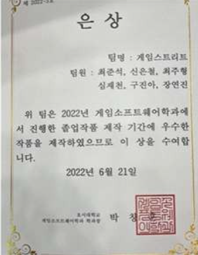
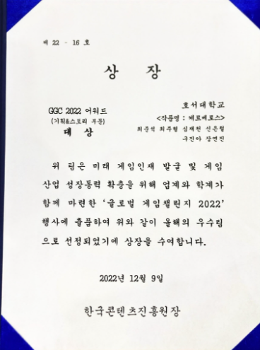
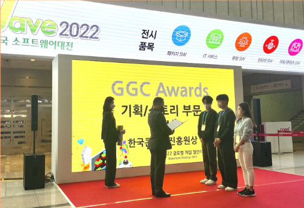

케르베로스
| 목적 | 졸업작품 |
|---|---|
| 장르 | 퍼즐 & 액션 어드벤처 |
| 플랫폼 | PC |
| 개발 환경 | UE4 (C++ / Blueprint) |
| 개발 기간 | 22.02.11 ~ 22.06.10 (약 4개월) |
| 개발 인원 | 6명 (개발 3, 기획 2, 디자이너 1) |
| 담당 업무 | 게임 플로우 · 플레이어 조작 · 차원 변경 시스템 · 게임 전반 UI/UX |
| 링크 | YouTube |
★ 2022 GGC 기획/스토리부문 대상
★ 졸업작품전 은상
한 줄 게임 소개
차원이 변경되는 미지의 섬에서 생존해 보물을 찾는 퍼즐&액션 게임.
1. 차원변경 시스템 기획 및 설계
배경
졸업작품 중간 발표까지는 게임이 특색 없는 퍼즐·액션물이라는 비평을 받았습니다.
차별화될 기능이 필요하다고 판단하던 중, 전공 수업인 게임 그래픽스 수업에서 배운 카메라의 원근/직교 투영 개념을 떠올려 "3D 공간에서 카메라 투영 방식을 바꾸면 2D처럼 보이게 만들 수 있지 않을까"라는 아이디어에서 시스템을 기획했습니다.
설계
쿼터뷰 + 원근 투영(X/Y/Z축 자유 이동)에서 차원변경을 실행하면 사이드뷰 + 직교 투영(X/Y 혹은 Z/Y축)으로 전환되며, 기존 지형지물이 하나의 축을 기준으로 정렬되어 보이게 됩니다.
다만 전환하려는 축 방향에 다른 지형지물이 있으면 플레이어와 겹쳐버리기 때문에, 레이캐스트와 물리 레이어를 활용해 전환 축 방향의 지형지물을 검출했습니다.
지형지물이 검출되면 차원변경을 막고 메시지와 함께 검출된 오브젝트를 빨간색으로 짧게 깜빡이도록(머티리얼 스왑) 피드백을 줬습니다.

동작 영상


차원변경 획득


X/Y, Z/Y 차원 변경
결과
중간 발표에서는 하위권에 머물렀지만, 차원변경 기믹을 추가한 뒤 최종 발표에서는 참가한 16개 팀 중 2등을 기록하며 은상을 수상했습니다.
이후 코엑스에서 열린 2022 GlobalGameChallenge에 참가해 기획·스토리 부문 대상을 수상했습니다.


